Citroën
Inspired By You
Founded: 1919
Country: France
Icon: DS, 2CV
Hydropneumatic
Inspired By You
Citroën was founded by André Citroën in 1919. He was an industrialist, not an engineer – he understood mass production and marketing. His goal was to build affordable cars for the masses.
The first Citroën, the Type A, was Europe's first mass-produced car. By 1920, Citroën was producing 100 cars per day. André Citroën was a marketing genius – he put the Citroën name on the Eiffel Tower (lit with 250,000 light bulbs) and organized cross-continent expeditions.
The 1934 Traction Avant was revolutionary – it was the world's first mass-produced front-wheel drive car with monocoque construction. It was years ahead of its time and established Citroën as a technological leader.
After WWII, Citroën launched two icons: the 2CV (1948) and the DS (1955). The 2CV was designed as a cheap, practical car for farmers. It became a cult classic. The DS stunned the world with its spaceship styling and advanced technology – hydropneumatic suspension, power steering, disc brakes.
The DS was so advanced that it remained in production for 20 years with minimal changes. It was the car of French presidents and the choice of intellectuals and artists.
Financial troubles led to Michelin taking control in the 1960s, then Peugeot (PSA) in 1976. The CX (1974) and BX (1982) continued the hydropneumatic tradition. The XM (1989) was Car of the Year 1990.
In the 2000s, Citroën moved towards more mainstream design with the C3, C4, and C5. The C4 Cactus introduced "Airbump" technology. The brand also created the高端 DS line, which became a separate brand in 2014.
Today, Citroën focuses on comfort with "Citroën Advanced Comfort" suspension and seats. The Ami electric quadricycle is a quirky urban mobility solution. The brand remains true to its innovative, unconventional spirit.
"The car must be comfortable, safe, and accessible to all."- André Citroën
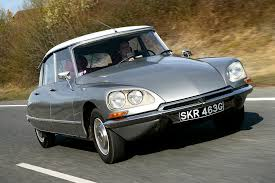
1955-1975
The Goddess. One of the most innovative and beautiful cars ever. Hydropneumatic suspension, power steering, disc brakes, and spaceship styling.
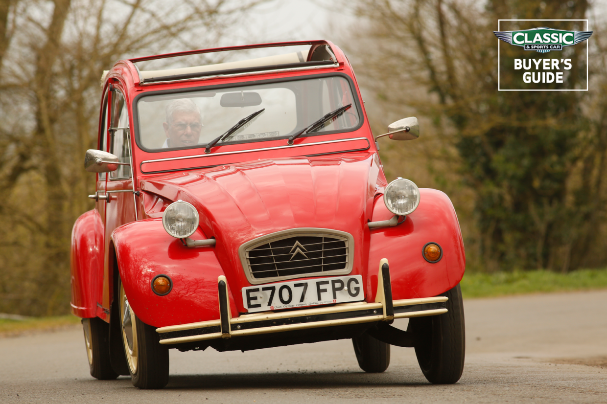
1948-1990
The Ugly Duckling. Designed for farmers, became a cult classic. Simple, cheap, and characterful. Over 5 million sold.
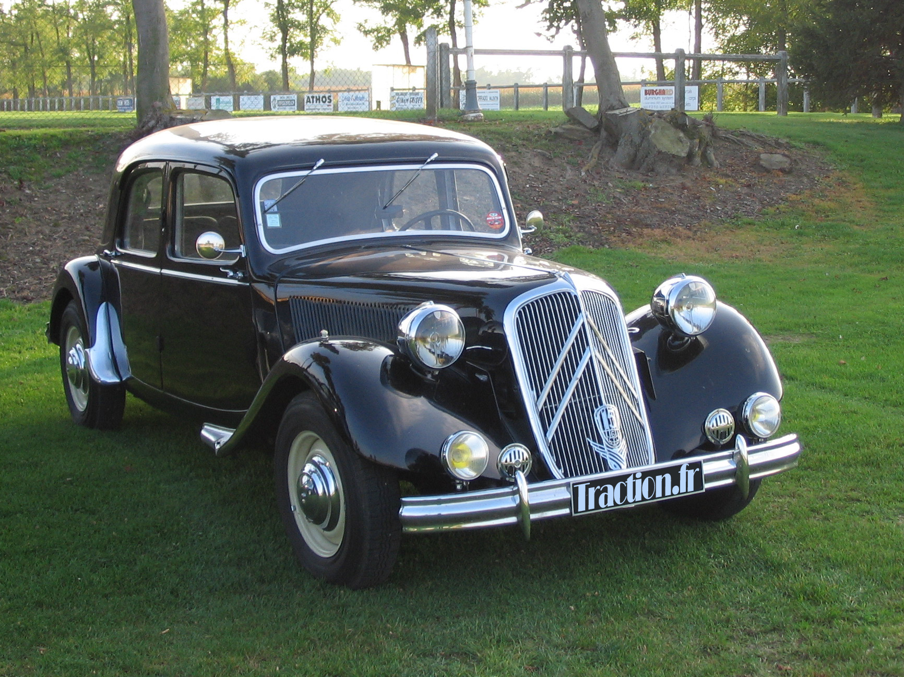
1934-1957
World's first mass-produced front-wheel drive car. Monocoque construction, advanced for its time. Gangster's car.
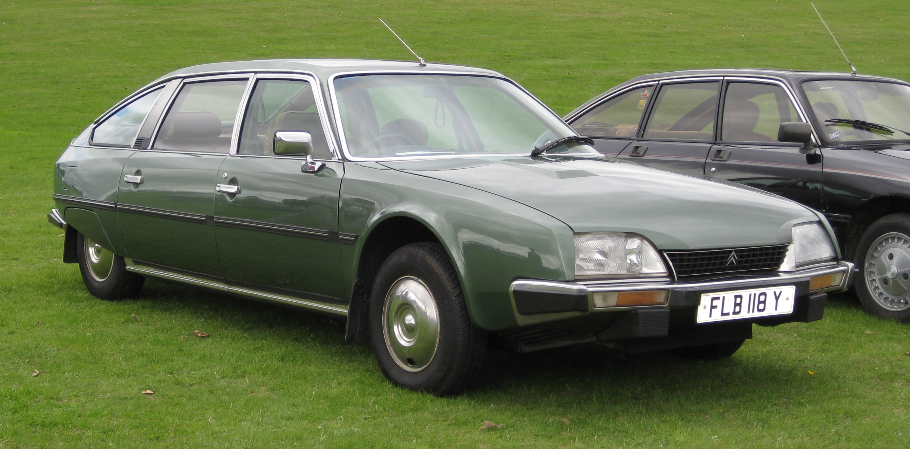
1974-1991
1975 Car of the Year. Spaceship design, hydropneumatic suspension, record-breaking aerodynamics.
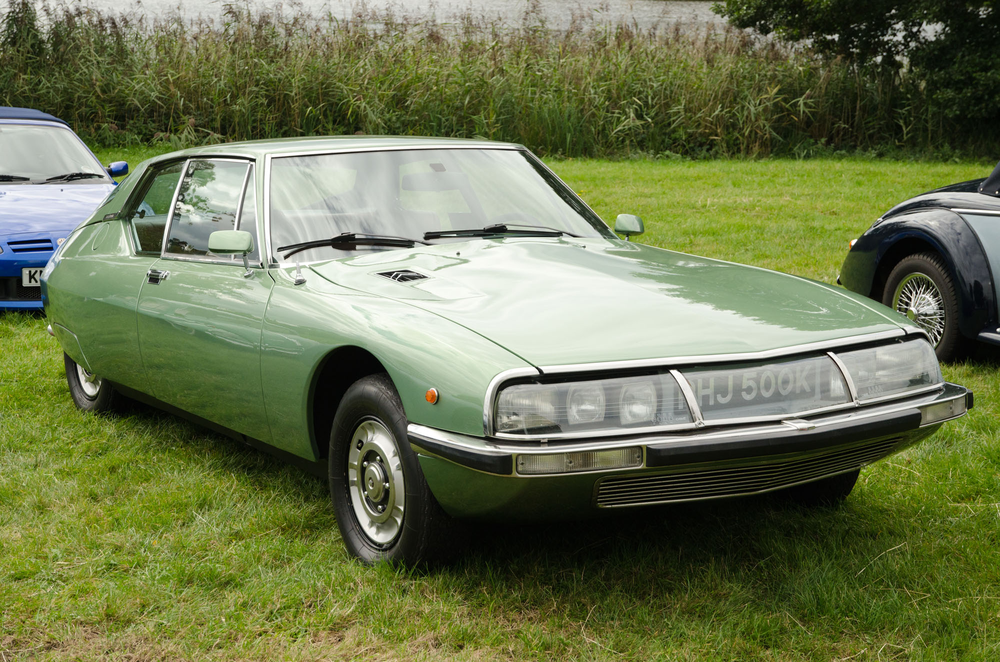
1970-1975
Maserati-powered Grand Tourer. Citroën bought Maserati to create this. V6, hydropneumatic, and stunning design.
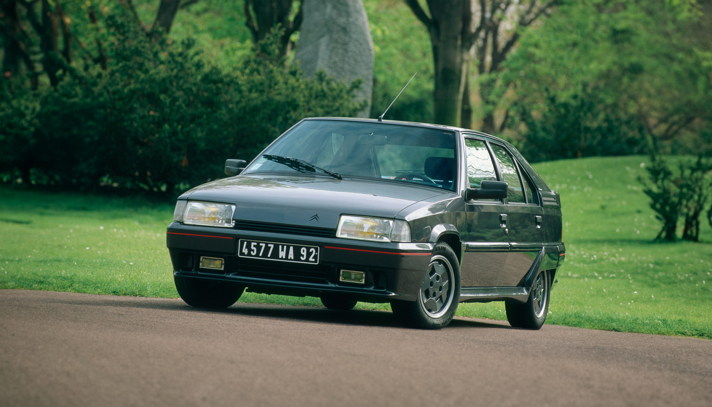
1982-1994
1980s design icon. Self-leveling suspension, digital dashboard, and hydropneumatic.
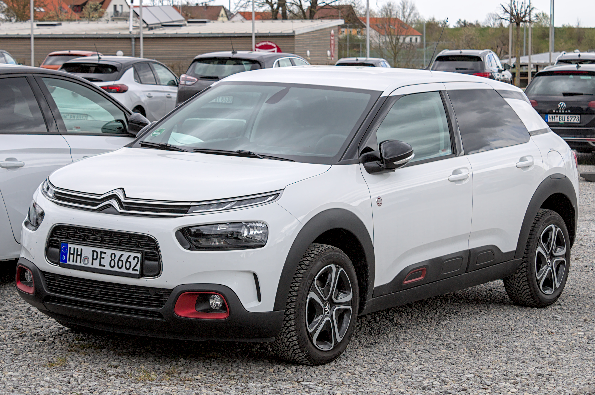
2014-2020
Quirky crossover with "Airbump" panels. Comfort-focused, innovative, and distinctive.
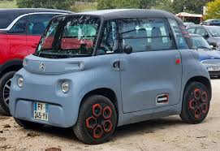
2020-present
Electric quadricycle. No license required in many countries. Quirky urban mobility.
The DS (pronounced "Déesse" – Goddess in French) is one of the most important cars in history. It debuted at the 1955 Paris Motor Show and caused a sensation.
Flaminio Bertoni's design was futuristic. The DS looked like nothing else on earth – spaceship-like, streamlined, and elegant.
The DS was the car of French presidents, intellectuals, and style icons. Roland Barthes called it "the equivalent of the great Gothic cathedrals." It's in the permanent collection of the Museum of Modern Art.
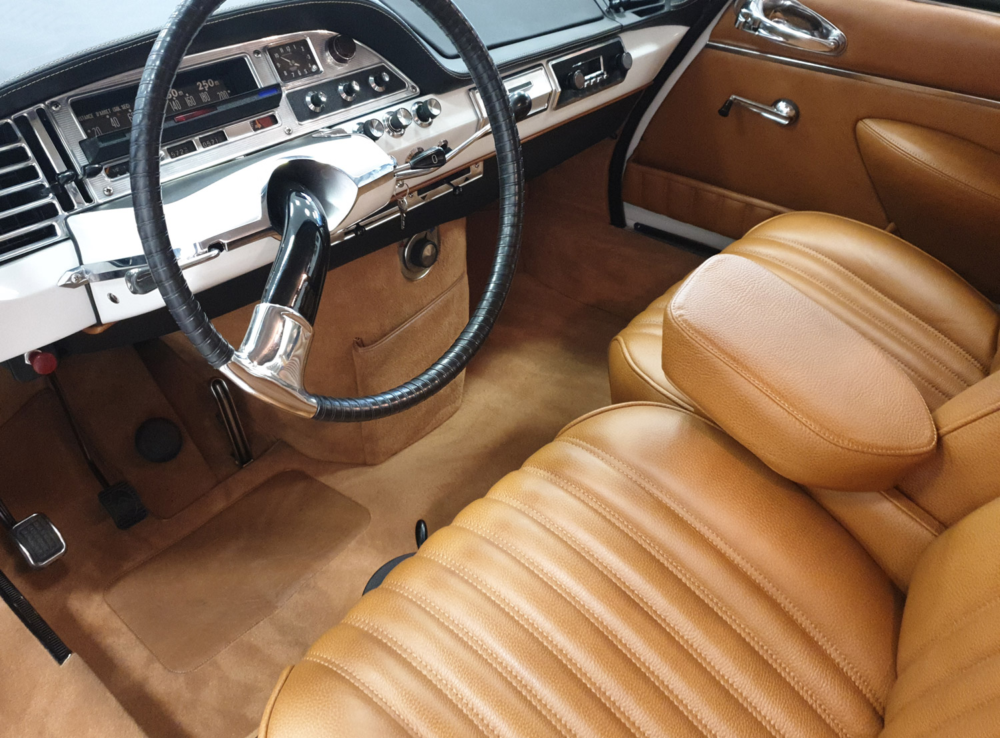
The 2CV (Deux Chevaux) was designed in the 1930s for French farmers. It needed to carry four people, 50kg of potatoes, and be drivable across plowed fields without breaking eggs.
Launched in 1948, produced until 1990. Over 5 million sold. It became a cult classic – the car for hippies, students, and anyone who loved its character.
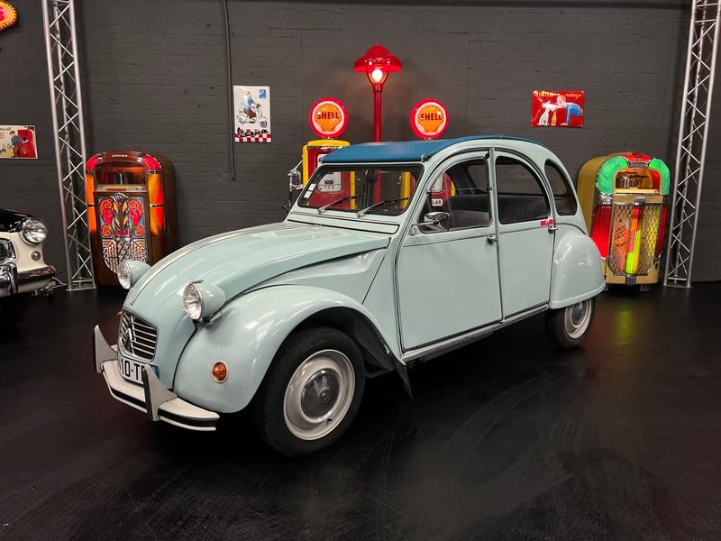
The Traction Avant (French for "front-wheel drive") was revolutionary. It introduced front-wheel drive and monocoque construction to mass production.
The Traction Avant was produced for 23 years. It was the car of French gangsters, detectives, and the Resistance. Its low-slung look and front-wheel drive made it iconic.

Citroën's hydropneumatic suspension was one of the most innovative systems ever. It used high-pressure fluid and nitrogen spheres to provide a magic carpet ride.
Each wheel has a sphere containing nitrogen gas and hydraulic fluid. The fluid compresses the gas, providing springing. The system self-levels and maintains constant ride height.
The system was so good that Rolls-Royce, Mercedes, and others licensed it. It defined Citroën for 60 years.
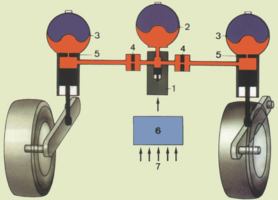